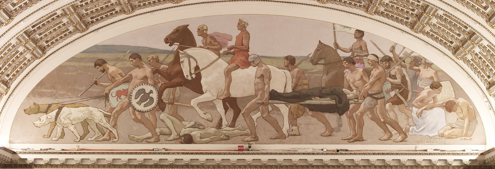

01
Introduction
This virtual zine details the ways war integrates itself within our daily lives and how we can combat
against it. This topic was chosen after asking myself "how could someone willingly take part in these atrocities?"
This lead me to exploring how civilian life can be complicit in war efforts, whether knowingly or unknowingly. In fact,
I would say that in most cases, the greatest evils are not from direct combatants, but from the civil society that supports it.

Mural of War by Gari Melchers.
02
The banality of evil
"The sad truth is that most evil is done by people who never make up their minds to be good or evil."
— Hannah Arendt
[images]
02
Education
[Image]
Education related to warfare.
03
Entertainment
[Image]
Entertainment related to warfare.
04
Industry
"The mask of humanity fall from capital. It has to take it off to kill everyone -- everything you love;
all the hope and tenderness in the world. It has to take it off, just for one second. To do the deed."
— The Deserter, Disco Elysium
Industry related to warfare.
[Image]
05
Closing Thoughts
closing throughts will go here.
05
Sources
[FORMAT CORRECTLY LATER]
Source 1: Eichmann in Jerusalem by Hannah Arendt
Source 2: American Industry in War and Transition by United States War Production Board
(Science source) Source 3: Engineering and war: militarism, ethics, institutions, alternatives
Blue, Ethan, author.; Levine, Michael P., 1950- author.; Nieusma, Dean, author.
(Liberal Arts source) Source 4: Cinema's Military Industrial Complex
Grieveson, Lee, editor.; Wasson, Haidee, editor.
Source 5: The Cold War and American Science: the military-academic complex at MIT and Stanford by Leslie, Stuart W. Valley Library
(Liberal Arts source) Source 6: Peace and the War Industry Boulding, Kenneth E. (Kenneth Ewart)
Source 7: Modoc War video
Source 8: War and society; the United States, 1941-1945.
Polenberg, Richard.